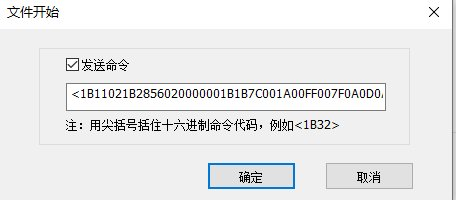
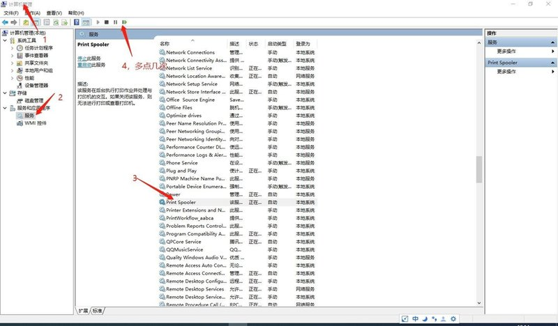

24针打印机驱动程序
🔧 全面掌握安装配置 • 🚀 深入解析高级功能 • ✅ 快速解决常见问题
培训内容目录
1. 前言
驱动程序概述与重要提示
2. Windows 系统下的安装与卸载
Setup.exe安装、手动安装、卸载方法
3. Linux 系统下的安装与卸载
图形界面安装、命令行安装、添加打印机
4. 驱动程序属性详解
打印首选项、功能设置、页面设置、打印效果
5. 常见问题解答 (FAQ)
通用问题、Windows特定问题、Linux特定问题
1. 前言
手册目的
本手册旨在帮助用户顺利安装、配置和使用实达24针系列打印机驱动程序。
适用范围
- Windows 操作系统详细安装与卸载步骤
- Linux 操作系统详细安装与卸载步骤
- 驱动程序各项参数配置说明
- 常见问题的解决方案
- 在排查打印问题时，请优先确认是否存在更新版本的驱动程序。若有，请先升级至最新版本后重新测试。
- 当所有标准应用打印正常，仅在特定行业软件中出现打印异常时，此问题可能涉及定制化开发，需要客户提供相关技术资料。
2. Windows 系统下的安装与卸载
2.1 安装驱动程序
2.1.1 使用 Setup.exe 安装（推荐）
- 启动安装程序
双击Setup.exe文件启动安装向导 - 自动检测打印机
确保打印机已通过 USB 或并口连接并开机 - 选择安装模式
自动安装或手动安装
演示图：Setup.exe安装界面
演示图：自动检测安装界面
Windows 手动安装步骤
2.1.2 手动安装步骤
当自动检测失败或需要自定义配置时：
- 进入手动安装界面
点击"自定义安装"按钮 - 选择打印机型号
从下拉列表中选择型号 - 选择连接端口
选择相应端口（USB001 或 LPT1） - 完成安装
确认信息后点击"安装"
演示图：手动安装步骤1
演示图：选择打印机型号
Windows 驱动程序卸载
2.2 卸载驱动程序
方法一：使用专用卸载工具（推荐）
- 运行
PrinterDriverCleaner.exe程序
方法二：通过安装程序卸载
- 再次运行
Setup.exe - 选择需要卸载的打印机型号
方法三：通过系统功能卸载
- 控制面板 > 设备和打印机
- 删除设备和驱动程序包
演示图：专用卸载工具界面
3. Linux 系统下的安装与卸载
3.1 安装驱动程序
本驱动为 Debian/Ubuntu 及其衍生发行版提供 .deb 格式的安装包。
方法一：图形界面安装（推荐）
- 直接双击
.deb安装包 - 使用系统自带的软件包管理器完成安装
方法二：命令行安装
演示图：Linux图形界面安装
演示图：Linux添加打印机界面
Linux CPU架构对应与注意事项
CPU架构对应表
| 适配 CPU / 芯片平台 | 指令集架构 | 对应驱动包 |
|---|---|---|
| Intel、AMD、兆芯、海光 | AMD64 | sd24plq_1.1.0-1.20_amd64.deb |
| 鲲鹏、飞腾、海思麒麟 | ARM64 | sd24plq_1.1.0-1.20_arm64.deb |
3.2 卸载驱动程序
图形界面卸载
命令行卸载
演示图：查看系统芯片架构
- 签名问题：部分系统可能需要开启开发者模式
- 依赖问题：若提示依赖关系不足，请改用命令行安装
- 架构匹配：请根据CPU平台选择正确的驱动包
4. 驱动程序属性详解
属性界面访问方式
- 在应用程序的打印对话框中点击"首选项"或"属性"按钮
- 右键点击打印机图标，选择"打印首选项"
4.1 打印首选项
打印首选项是用户最常用的设置界面，包含以下主要功能：
- 纸张尺寸：选择合适的纸张规格
- 打印方向：纵向或横向打印
- 打印质量：选择打印分辨率
- 份数：设置打印份数
- 打印方向：单向或双向打印选项
演示图：打印首选项主界面
演示图：打印首选项高级设置
4.2 打印机属性页快速浏览
主要功能页面
- 打印功能设置页面
配置打印机的核心打印行为 - 页面设置功能页面
调整页面布局、尺寸和方向 - 双色打印功能设置页面
调整打印色彩与图像质量
Linux 版驱动的功能与 Windows 版保持一致，但所有选项均通过下拉列表选择，不支持手动输入。
演示图：打印功能设置界面
演示图：页面设置界面
4.3 打印功能设置详解
核心功能配置
裁剪尾部空白
- 自动移除每行末尾的空白字符
- 优化打印数据，解决内容超宽导致的错位
跳过空白页
- 自动跳过完全空白的页面
- 节省纸张并提高效率
打印流水
- 打印完一页后不执行换页操作
- 适用于流水单、日志等连续打印场景
OKI 仿真模式
- 模拟 OKI 打印机的指令集
- 用于兼容仅支持 OKI 模式的旧款机型
演示图：裁剪尾部空白

演示图：跳过空白页
演示图：OKI仿真模式
4.3 自定义打印命令
自定义命令功能
允许高级用户在打印任务的特定阶段插入自定义的 ESC/P 控制命令（十六进制格式）：
- 文件开始：打印任务开始时执行
- 页开始：每页开始时执行
- 页结束：每页结束时执行
- 文件结束：打印任务结束时执行
演示图：文件开始命令
演示图：页开始命令
演示图：禁用发送命令
4.4 页面设置功能
页面布局调整
图像旋转
- 选项：不旋转、旋转90°、旋转180°、旋转270°
- 用于校正特定软件在处理横向页面时的自动旋转问题
页面缩放
- 可按百分比（50-100%）调整打印内容的宽度和高度
- 适用于套打场景的微调和内容适配
打印位置调整
- 通过垂直和水平偏移量精确控制打印起始位置
- 单位：0.1mm，范围：-1000 至 1000
- 正值：向下/向右偏移；负值：向上/向左偏移
演示图：旋转页面设置
演示图：打印内容偏移和缩放
4.5 打印效果设置
双色打印配置
双色打印设置
- 启用并选择双色打印模式，默认模式一
- 不同模式对应不同的数据组织方式
- 若模式一出现乱码，请尝试切换至模式二
智能图像处理
- 人像识别：自动识别并优化人像区域
- 印章前置：确保印章能以红色完整打印
- 底纹处理：保留背景底纹的同时清晰打印前景文字
红色像素范围设置
- 通过调整 RGB 阈值范围，精确定义红色像素
- 用于优化红色印章等的打印效果
演示图：人像识别功能
演示图：印章前置效果
演示图：红色阈值范围
4.5 打印效果调整
打印质量优化
双色色带位置
- 设置红、黑两色色带分别对应的打印针位（0-24针）
- 可通过"针测试"功能打印色带的实际覆盖范围
打印效果调整
- 图像模式：
- "对比度较高"：适合文本打印
- "保留更细节"：适合图像打印
- 打印浓度：调整整体及人像区域的打印浓度（0-255）
应用场景
当打印内容不清晰或断线时：
- 首先尝试提高分辨率（打印首选项-高级）
- 若效果不佳，再调整图像模式和打印浓度
演示图：提高打印分辨率
演示图：增加图像密度
演示图：关于页面
5. 常见问题解答 (FAQ)
问题分类
5.1 通用问题
打印乱码、自定义纸张、位置调整、设备识别等
5.2 Windows 系统特定问题
打印服务、USB端口、驱动更新、文件保存等
5.3 Linux 系统特定问题
CUPS服务、端口配置、串口设置、数据收集等
常见问题快速索引
- 打印输出乱码 → 检查驱动型号、端口设置、仿真模式
- 打印内容不清晰 → 提高分辨率、调整图像模式、增加浓度
- 红色印章不清晰 → 调整红色像素范围、色带位置
- 安装时无法识别 → 检查Device ID、数据线、接口
- 自定义纸张设置 → 页面设置中创建自定义尺寸
- 打印位置偏移 → 调整垂直和水平偏移量
5.1 通用问题解答
Q1：打印输出乱码、空走纸或打印几个字符就停止？
排查步骤：
- 确认驱动型号与打印机完全匹配
- 检查端口设置是否正确（USB、LPT）
- 关闭"OKI仿真模式"（除非特定需求）
- 更换质量可靠的打印机数据线
Q2：如何打印自定义尺寸的票据或标签？
- 在驱动属性"页面设置"中创建自定义纸张尺寸
- 在应用程序页面设置中选择创建的纸张尺寸
Q3：如何微调打印内容的整体位置？
在驱动属性"页面设置"中，通过调整"垂直偏移"和"水平偏移"进行精确校准。
Q4：安装时无法识别到打印机？
- 检查并确保"Device ID"功能已开启
- 检查数据线和接口，或更换计算机测试
- 联系技术支持确认是否需要更新设备固件
演示图：启用设备ID
Q5：打印内容不清晰，有断点？
- 检查色带状态和压杆位置
- 提高打印分辨率
- 选择"保留更细节"图像模式
- 适当增加打印浓度
5.2 Windows 系统特定问题
Q1：打印服务(Print Spooler)意外中断？
通过 Windows 服务管理器重启 Print Spooler 服务。
演示图：重启打印服务
Q2：如何查看USB端口号？
在设备管理器中查看USB打印支持属性，找到对应端口号。
演示图：获取USB端口号
Q3：更新驱动后显示仍是旧版本？
使用专用卸载工具彻底卸载旧驱动后重新安装。
Q4：如何保存打印任务为文件？
- 在打印机属性"端口"选项卡中勾选 FILE: (打印到文件)
- 执行打印操作，系统提示保存文件
- 建议使用绝对路径（如 D:\test.prn）
演示图：设置设备端口为FILE
Q5：卸载后仍有打印机图标？
这是Windows系统缓存的"虚影"。可右键删除设备，或重启计算机清除。
5.3 Linux 系统特定问题
Q1：安装驱动后找不到打印机？
- 检查CUPS服务状态：
systemctl status cups - 驱动安装后需手动添加打印机
Q2：如何配置USB端口连接？
开启打印机Device ID功能后，系统通常能自动检测并填充设备URI。
演示图：自动检测USB端口
Q3：如何配置并口(LPT)连接？
- 执行
sudo lpinfo -v查找并口路径 - 手动输入URI地址（如 parallel:/dev/lp2）
Q4：如何配置串口连接？
通过CUPS Web管理界面 (http://localhost:631) 进行配置：
- 选择本地串口
- 配置波特率等串口参数
- 选择对应厂商和型号
演示图：配置串口设置
Q5：如何收集打印数据？
- 修改 /etc/cups/cups-files.conf
- 将 FileDevice 设为 Yes
- 重启系统
- 启用"打印到文件"功能
培训总结
关键要点回顾
- 安装前准备：确保打印机型号匹配，连接正确，电源开启
- 优先使用自动安装：Setup.exe 自动检测是最简便的安装方式
- 问题排查顺序：驱动版本 → 端口设置 → 仿真模式 → 硬件连接
- 打印质量优化：分辨率 → 图像模式 → 打印浓度
- 位置调整：使用偏移量进行精确校准
- 双色打印：红色像素范围 → 色带位置 → 智能处理
最佳实践建议
- 定期检查驱动更新版本
- 保持打印机固件最新
- 使用质量可靠的数据线
- 合理配置打印参数
- 及时清理打印队列
技术支持
- 首先检查是否有驱动更新版本
- 参考本手册进行标准排查
- 收集打印数据文件以供技术分析
- 联系技术支持获得专业帮助
培训完成
🎉 恭喜完成培训！
您已掌握实达24针打印机驱动程序的完整使用方法
✅ 安装配置 • ✅ 功能设置 • ✅ 问题排查